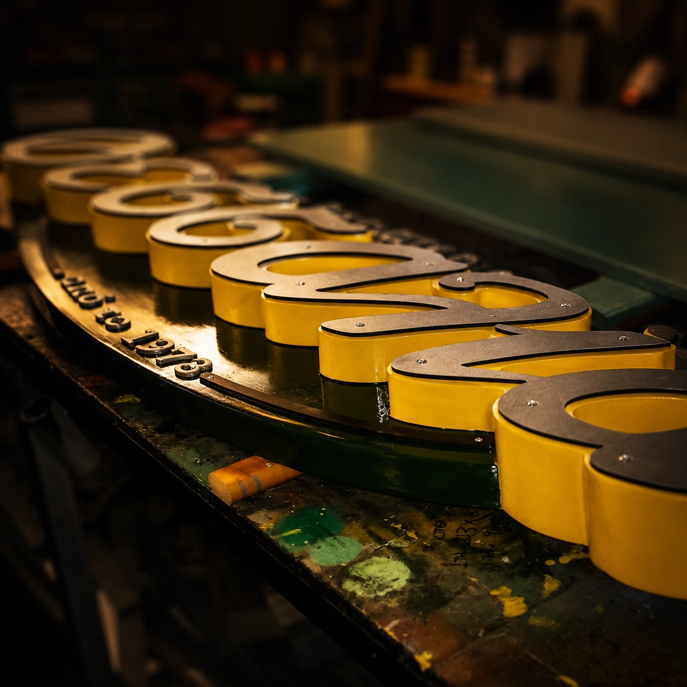

SIGN MAKING
Το πρώτο καλωσόρισμα στον επισκέπτη.
Παραδοσιακή επιγραφή για την Κηφισιά. Ανάγλυφη από μασίφ σουηδικό ξύλο και μέταλλο, πολυουρεθανικά χρώματα και ειδικα αγκύρια στήριξης. Έμφαση στη λεπτομέρεια, στην ιδιαιτερότητα και στην ποιότητα κατασκευής.